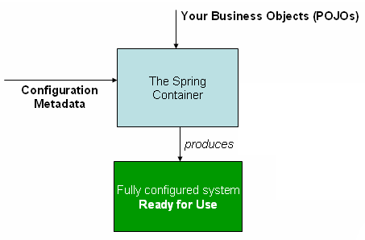

Spring是一个支持快速开发Java EE应用程序的框架。它提供了一系列底层容器和基础设施，并可以和大量常用的开源框架无缝集成，可以说是开发Java EE应用程序的必备。
Spring Spring Framework主要包括几个模块：
支持IoC和AOP的容器；
支持JDBC和ORM的数据访问模块；
支持声明式事务的模块；
支持基于Servlet的MVC开发；
支持基于Reactive的Web开发；
以及集成JMS、JavaMail、JMX、缓存等其他模块。
Spring的优点：
Spring是一个开源的免费的框架（容器）；
Spring是一个轻量级，非入侵式的框架；
控制反转(Ioc)，面向切面的编程(AoP)；
支持事务的处理，对框架整合的支持；
IoC理论推导 IoC全称``Inversion of Control`，直译为控制反转。那么何谓IoC？在理解IoC之前，我们先看看通常的Java组件是如何协作的。
在JavaWeb学习时使用的方案大致是：
UserDao接口
UserDaoImpl实现类
UserService业务接口
USerServiceImpl业务实现类
假如现在多了很多需求，要求实现UserDaoMysqlImpl、UserDaoOracleImpl等很多实现类。本来只是改动了dao层，却导致此时Service层的代码也要因此而改变，仅仅是因为客户的需求发生了一点小变更，就要更改整个核心代码代价很大，得不偿失。
每一个Service都去实例化Dao层的实现类，采用简单的new去创建实例并持有该实例，会导致以下的缺点：
实例化一个组件其实很难，例如，UserServiceImpl要创建UserDaoImpl，实际上需要读取配置，建立连接，做很多操作才能够实例化该对象。
没有必要让BookService和UserService等分别创建DataSource实例，完全可以共享同一个DataSource，但谁负责创建DataSource，谁负责获取其他组件已经创建的DataSource，不好处理。
很多组件需要销毁以便释放资源，例如DataSource，但如果该组件被多个组件共享，如何确保它的使用方都已经全部被销毁？
随着更多的组件被引入，例如，评论，用户对话等组件，需要共享的组件写起来会更困难，这些组件的依赖关系会越来越复杂。
测试某个组件，例如BookService，非常复杂，因为必须要在真实的数据库环境下执行，否则很难发现问题。
使用Set接口进行实现，导致程序发生了革命性的变化！
1 2 3 4 5 private UserDao userdao;public void setUserDao (UserDao userDao) this .userDao = userDao； }
之前，程序是主动创建对象，控制权掌握在了程序员手上，小变动会导致大修改。
使用了set注入后，程序变得不再有主动性，而是变成了被动的接受对象。
这种思想，从本质解决了问题，程序员不用再去管理对象的创建，使得系统的耦合性大大降低，可以更加专注的在业务的实现上！这是IOC的原型，将控制方进行了转换，让用户自行选择。
IoC本质 控制反转是一种设计思想，在没有使用IoC的程序中，对象的创建与对象间的依赖关系完全硬编码在程序中，对象的创建由程序自己控制；但是在引入控制反转的思想后，将对象的创建转移给了第三方，获取所依赖对象的方式交换了。
IoC是Spring框架的核心，可以使用XML配置，也可以使用注解等方法实现IOC，Spring容器在初始化时读取配置文件，根据配置文件或元数据创建与组织对象存入容器中，程序要使用时，再从IoC容器中取出所需的对象进行使用。

控制反转是一种通过描述（XML或注解）并通过第三方去生产或获取特定对象的方式。在Spring中实现控制反转的是IoC容器，其实现方法是依赖注入（Dependency Injection,DI）。
第一个Spring程序 导入依赖：
1 2 3 4 5 6 7 8 9 10 <dependency > <groupId > org.springframework</groupId > <artifactId > spring-webmvc</artifactId > <version > 5.3.13</version > </dependency > <dependency > <groupId > org.springframework</groupId > <artifactId > spring-jdbc</artifactId > <version > 5.3.13</version > </dependency >
创建Hello类：
1 2 3 4 5 6 7 8 9 10 11 12 13 14 15 16 17 18 19 20 package com.heavytiger.pojo;public class Hello private String str; public String getStr () return str; } public void setStr (String str) this .str = str; } @Override public String toString () return "Hello{" + "str='" + str + '\'' + '}' ; } }
创建beans.xml:
1 2 3 4 5 6 7 8 9 10 11 12 <?xml version="1.0" encoding="UTF-8"?> <beans xmlns ="http://www.springframework.org/schema/beans" xmlns:xsi ="http://www.w3.org/2001/XMLSchema-instance" xsi:schemaLocation ="http://www.springframework.org/schema/beans http://www.springframework.org/schema/beans/spring-beans.xsd" > <bean id ="hello" class ="com.heavytiger.pojo.Hello" > <property name ="str" value ="Spring" /> </bean > </beans >
创建测试类：
1 2 3 4 5 6 7 8 9 10 11 12 import com.heavytiger.pojo.Hello;import org.springframework.context.ApplicationContext;import org.springframework.context.support.ClassPathXmlApplicationContext;public class MyTest public static void main (String[] args) ApplicationContext context = new ClassPathXmlApplicationContext("beans.xml" ); Hello hello = (Hello) context.getBean("hello" ); System.out.println(hello); } }
测试结果：
没有创建对象，但是得到了所需的对象。原因是Spring通过反射机制，找到对应的包下的类，调用其set方法达到注入的效果。
Spring的配置 不同于pom.xml，web.xml，设计思路为约定优于配置，Spring的配置名称可以随意更改。因为可能使用多个业务，或者使用不同的程序员进行开发，因此可能有多个spring.xml文件，所以可以在web.xml下配置其路径(该配置可以将所有的spring-开头的xml文件配置成为所需路径)：
1 2 3 4 5 6 <context-param > <param-name > contextConfigLocation</param-name > <param-value > /WEB-INF/spring-*.xml </param-value > </context-param >
别名 1 2 <alias name ="user" alias ="userNew" />
Bean的配置 1 2 3 4 5 6 7 8 <bean id ="user" class ="com.heavytiger.pojo.User" name ="user1 u2,u3;u4" > <propertity name ="name" value ="heavytiger" /> </bean >
import import一般用于团队开发，不同的程序员可能编写不同的模块，可能有自己的beans.xml名称，因此可以使用import语句将不同的xml合并。
applicationContext.xml
bean_a.xml
bean_b.xml
bean_c.xml
可以在所有的程序中，都使用获取一个applicationContext.xml，在其中import
1 2 3 <import resource ="bean_a.xml" /> <import resource ="bean_b.xml" /> <import resource ="bean_c.xml" />
使用的时候，全部使用applicationContext.xml即可
懒初始化Bean 默认情况下，作为初始化过程的一部分，ApplicationContext实现会急于创建和配置所有singleton bean ，但是如果多天后取用bean时配置出现了变化，会导致错误，因此可以标记为延迟初始化来防止单例bean的预实例化。
1 2 <bean id ="lazy" class ="com.something.ExpensiveToCreateBean" lazy-init ="true" /> <bean name ="not.lazy" class ="com.something.AnotherBean" />
依赖注入 构造器注入
使用无参构造，默认方式，Spring会自动调用无参构造方法帮助创建对象
使用有参构造，反射通过构造器注入参数：
通过参数类型匹配
1 2 3 4 5 <bean id ="exampleBean" class ="examples.ExampleBean" > <constructor-arg type ="int" value ="7500000" /> <constructor-arg type ="java.lang.String" value ="42" /> </bean >
通过参数索引匹配创建对象
1 2 3 4 <bean id ="exampleBean" class ="examples.ExampleBean" > <constructor-arg index ="0" value ="7500000" /> <constructor-arg index ="1" value ="42" /> </bean >
直接通过参数名创建对象
1 2 3 4 <bean id ="exampleBean" class ="examples.ExampleBean" > <constructor-arg name ="years" value ="7500000" /> <constructor-arg name ="ultimateAnswer" value ="42" /> </bean >
容器在配置文件加载的时候就已经将对象创建了，并且只有一份实例，获取到的对象都是同一个实例。
Set方法注入 以复杂类型为例，使用Set方法注入：
Address类 1 2 3 4 5 package com.heavytiger.pojo;public class Address private String address; }
Student类 1 2 3 4 5 6 7 8 9 10 public class Student private String name; private Address address; private String[] books; private List<String> hobbies; private Map<String, String> cards; private Set<String> games; private String mate; private Properties info; }
beans.xml 1 2 3 4 5 6 7 8 9 10 11 12 13 14 15 16 17 18 19 20 21 22 23 24 25 26 27 28 29 30 31 32 33 34 35 36 37 38 39 40 41 42 43 44 45 46 47 48 49 50 51 52 53 54 55 56 57 58 59 <?xml version="1.0" encoding="UTF-8"?> <beans xmlns ="http://www.springframework.org/schema/beans" xmlns:xsi ="http://www.w3.org/2001/XMLSchema-instance" xsi:schemaLocation ="http://www.springframework.org/schema/beans http://www.springframework.org/schema/beans/spring-beans.xsd" > <bean id ="address" class ="com.heavytiger.pojo.Address" > <property name ="address" value ="马房山男子职业技术学院" /> </bean > <bean id ="student" class ="com.heavytiger.pojo.Student" name ="s1" > <property name ="name" value ="heavytiger" /> <property name ="address" ref ="address" /> <property name ="books" > <array > <value > 红楼梦</value > <value > 水浒传</value > <value > 三国演义</value > <value > 西游记</value > </array > </property > <property name ="hobbies" > <list > <value > 骂彬彬</value > <value > 打电动</value > <value > 登dua郎</value > <value > 怼阿妈</value > </list > </property > <property name ="cards" > <map > <entry key ="身份证" value ="1145141919" /> <entry key ="hello" value ="杰哥好" /> </map > </property > <property name ="games" > <set > <value > WoT</value > <value > CoC</value > </set > </property > <property name ="mate" > <null /> </property > <property name ="info" > <props > <prop key ="学号" > 114514</prop > <prop key ="密码" > 12345678</prop > </props > </property > </bean > </beans >
Test类 1 2 3 4 5 6 7 8 public class MyTest public static void main (String[] args) ApplicationContext context = new ClassPathXmlApplicationContext("beans.xml" ); Student student = (Student) context.getBean("s1" ); System.out.println(student); } }
测试结果 1 2 3 4 5 6 7 8 9 10 11 12 13 14 15 16 Student{ name='heavytiger', address=Address{address='马房山男子职业技术学院'}, books=[红楼梦, 水浒传, 三国演义, 西游记], hobbies=[骂彬彬, 打电动, 登dua郎, 怼阿妈], cards={ 身份证=1145141919, hello=杰哥好 }, games=[WoT, CoC], mate='null', info={ 密码=12345678, 学号=114514 } }
拓展方法注入 p命名空间注入 p命名空间注入，可以直接注入属性的值：property
1 2 3 4 5 6 7 8 9 10 <?xml version="1.0" encoding="UTF-8"?> <beans xmlns ="http://www.springframework.org/schema/beans" xmlns:xsi ="http://www.w3.org/2001/XMLSchema-instance" xmlns:p ="http://www.springframework.org/schema/p" xsi:schemaLocation ="http://www.springframework.org/schema/beans http://www.springframework.org/schema/beans/spring-beans.xsd" > <bean id ="user" class ="com.heavytiger.pojo.User" p:name ="heavytiger" p:age ="20" /> </beans >
c命名空间注入 c命名空间注入，可以通过构造器注入: constructor
1 2 3 4 5 6 7 8 9 10 <?xml version="1.0" encoding="UTF-8"?> <beans xmlns ="http://www.springframework.org/schema/beans" xmlns:xsi ="http://www.w3.org/2001/XMLSchema-instance" xmlns:c ="http://www.springframework.org/schema/c" xsi:schemaLocation ="http://www.springframework.org/schema/beans http://www.springframework.org/schema/beans/spring-beans.xsd" > <bean id ="user" class ="com.heavytiger.pojo.User" c:name ="heavytiger" c:age ="20" /> </beans >
Bean的作用域 创建bean时，可以指定bean的作用域，Spring框架支持六个作用域
Scope
Description
singleton (默认)将每个 Spring IoC 容器的单个 bean 配置范围限定为单个对象实例。
prototype 将单个 bean 配置的作用域限定为任意数量的对象实例。
request 将单个 bean 配置的范围限定为单个 HTTP 请求的生命周期。也就是说，每个 HTTP 请求都有一个在单个 bean 配置后面创建的 bean 实例。仅在可感知网络的 Spring ApplicationContext中有效。
session 将单个 bean 配置的范围限定为 HTTP Session的生命周期。仅在可感知网络的 Spring ApplicationContext上下文中有效。
application 将单个 bean 配置的范围限定为ServletContext的生命周期。仅在可感知网络的 Spring ApplicationContext上下文中有效。
websocket 将单个 bean 配置的范围限定为WebSocket的生命周期。仅在可感知网络的 Spring ApplicationContext上下文中有效。
1 <bean id ="student" class ="com.heavytiger.pojo.Student" scope ="singleton" >
单例模式每次都是同一个对象，原型模式每次都会产生一个值一摸一样的新对象，其余的均在web中可使用
Bean的自动装配 自动装配时Spring满足Bean依赖的一种方式，简单来说，Spring会在上下文中自动寻找，并自动给Bean装配属性。
在Spring中有三种装配方式：
在xml中显式地配置
在java中显示地配置
隐式自动装配bean
byName自动装配 1 2 3 4 5 6 7 8 9 10 <bean id ="dog" class ="com.heavytiger.pojo.Dog" /> <bean id ="cat" class ="com.heavytiger.pojo.Cat" /> <bean id ="people" class ="com.heavytiger.pojo.People" autowire ="byName" > <proprety name ="name" value ="heavytiger" /> </bean >
byName会自动在容器的上下文中查找，和自己对应的set方法后面的值对应的beanId，但是此处把id改为cat1，dog2，将会报错，因为找不到和set方法后值对应的beanId了。
byType自动装配 1 2 3 4 5 6 7 8 9 10 <bean id ="dog123" class ="com.heavytiger.pojo.Dog" /> <bean id ="cat12345" class ="com.heavytiger.pojo.Cat" /> <bean id ="people" class ="com.heavytiger.pojo.People" autowire ="byType" > <proprety name ="name" value ="heavytiger" /> </bean >
byType会自动在容器的上下文中查找，和自己对象属性类型相同的bean，因此此时把id改为dog123和cat12345后，仍然可以找到。但是弊端是必须保证类型全局为一个，若有多个相同的类，必报错。
注解自动装配 1 2 3 4 5 6 7 8 9 10 11 12 13 14 15 <?xml version="1.0" encoding="UTF-8"?> <beans xmlns ="http://www.springframework.org/schema/beans" xmlns:xsi ="http://www.w3.org/2001/XMLSchema-instance" xmlns:context ="http://www.springframework.org/schema/context" xsi:schemaLocation ="http://www.springframework.org/schema/beans http://www.springframework.org/schema/beans/spring-beans.xsd http://www.springframework.org/schema/context http://www.springframework.org/schema/context/spring-context.xsd" > <context:annotation-config /> <bean id ="dog" class ="com.heavytiger.pojo.Dog" /> <bean id ="cat" class ="com.heavytiger.pojo.Cat" /> <bean id ="people" class ="com.heavytiger.pojo.People" /> </beans >
首先要导入xmlns:context和xsi:schemaLocation，然后使用<context:annotation-config/>开启注解支持
1 2 3 4 5 6 7 8 9 public class People @Autowired private Cat cat; @Autowired @Qualifier(value="dog2") private Dog dog; private String name; ...... }
此时，甚至可以不需要set方法，因为可以通过反射直接拿到私有成员变量进行注入。
@Autowired(required=(default)true/false)
@Autowired包含一个required参数，若@Autowired(required=false)表示允许在beans.xml中找不到该bean，此时也不会报错，和另一个注解@Nullable同理，表明字段可以为null。
@Qualifier(value=”xxx”)
如果环境很复杂的情况，例如有多个同一Type的bean，或beanId和属性名不一样时，可以使用@Qualifier(value="xxx")注解指定需要哪一个对象实例，进行自动装配
@Resource(name=”xxx”)
1 2 3 4 5 6 7 8 public class People @Resource(name="cat1") private Cat cat; @Resource(name="dog2") private Dog dog; private String name; ...... }
使用@Resource注解也可以实现自动装配，name表示需要装配的beanId
@Resource 和 @Autowired的区别：
都是用来自动装配的，都可以放在属性字段上
@Autowired通过byType的方式实现，设置required=false的情况下，允许找不到bean
@Resource默认通过byName的方式实现，如果找不到名字，则通过byType的方式实现，若两个都找不到，则会报错
使用注解开发 注解开发前提：
添加context依赖
为类添加相应的注解
导入aop包
spring-aop-4.0.0.RELEASE.jar
为了不再在IOC中一个个的声明类对象，首先根据每一个类的功能的不同，Spring中先规定了基于组件的注解，大致可以分为以下四种：
普通组件：@Component
标识一个受Spring IOC容器管理的组件，我们也可以理解为是除了数据库层、业务逻辑层、控制层组件以外的其他组件使用的注解。
持久化层组件：@Respository
标识一个受Spring IOC容器管理的持久化层组件，一般就是用来标注数据库层
业务逻辑层组件：@Service
标识一个受Spring IOC容器管理的业务逻辑层组件，
表述层控制器组件：@Controller
标识一个受Spring IOC容器管理的表述层控制器组件。
同时这几个注解后面也可以添加一些参数，比如比较常用的一个是注解的括号中加value属性，来表示这个组件在容器中的ID，如果不设置value值时，默认的ID是类名的全称（第一个字母小写）。
通过这四个注解我们首先就可以将所有的组件逐一分类，在这里有一点需要注意：事实上Spring并没有能力识别一个组件到底是不是它所标记的类型
扫描组件
在applicationConfig.xml中配置了如下语句后，将扫描包下的注解，实现上下文：
1 <context:component-scan base-package ="com.heavytiger" />
使用Java的方式配置Spring 可以完全不适用Spring的xml配置，全权交给Java来完成！
JavaConfig是Spring的一个子项目，在Spring 4之后，成为了一个核心功能
实体类：
1 2 3 4 5 6 7 8 9 10 11 12 13 14 @Component public class User private String name; public String getName () return name; } @value("heavytiger") public void setName (String name) this .name = name; } ... }
配置文件：
1 2 3 4 5 6 7 8 9 10 11 12 13 14 15 16 17 18 19 20 21 22 package com.heavytiger.pojo;import org.springframework.context.annotation.Bean;import org.springframework.context.annotation.ComponentScan;import org.springframework.context.annotation.Configuration;import org.springframework.context.annotation.Import;@Configuration @ComponentScan("com.heavytiger.pojo") @Import(MyConfig2.class) public class MyConfig @Bean public User getUser () return new User(); } }
测试类：
1 2 3 4 5 6 7 public class MyTest public static void main (String[] args) ApplicationContext context = new AnnotationConfigContext(Myconfig.class); User user = (User) context.getBean("user" ); System.out.println(user.getName()); } }
代理模式(Proxy) 代理模式是SpringAOP的底层，这样做的好处是:可以在目标对象实现的基础上，增强额外的功能操作，即扩展目标对象的功能。
这里使用到编程中的一个思想：不要随意去修改别人已经写好的代码或者方法，如果需改修改，可以通过代理的方式来扩展该方法。
代理模式的分类：
举例说明：
小明需要租房，但是他并没有直接取和房东交接，而是找到了中介所，让中介所和房东交接选房签合同，完成了很多很多的复杂操作，最后同样达成了租房的目的，这就是代理模式。
代理模式的好处：
可以使真实角色的操作更加纯粹，抽离其他业务，不需要再去关注其他的公共业务
公共业务交给代理角色，实现了业务的分工
公共业务发生拓展时，可以方便集中管理
代理模式的缺点：
一个真实角色会产生一个代理角色；代码量会翻倍，开发效率会变低
静态代理 角色分析：
抽象角色：一般会使用接口或者抽象类来解决
真实角色：被代理的角色
代理角色：代理真实角色，代理后，一般会进行附属操作
客户：访问代理对象的人
接口：
1 2 3 4 public interface Rent public void rent () }
真实角色：
1 2 3 4 5 6 public class Host implements Rent public void rent () System.out.println("房东：我要出租房子！" ); } }
代理角色：
1 2 3 4 5 6 7 8 9 10 11 12 13 14 15 16 17 18 19 20 public class Proxy implements Rent private Host host; public Proxy () } public Proxy (Host host) this .host = host; } public void rent () host.rent(); contract(); } public void contract () System.out.println("中介：我来帮忙签合同！" ); } }
客户端访问代理角色：
1 2 3 4 5 6 7 public class Client public static void main () Proxy proxy = new Proxy(new Host()); proxy.rent(); } }
动态代理
动态代理和静态代理角色一样
动态代理的代理类是动态生成的，不是被直接写好的
动态代理分为两大类：基于接口的动态代理，基于类的动态代理
基于接口–JDK动态代理
基于类–cglib
java字节码实现–javassist
需要了解两个类：Proxy代理，InvocationHandler调用处理程序
InvocationHandler：
在反射包下的一个接口，是由代理是你的调用处理程序所实现的接口。
每个代理实例都有一个关联的调用处理程序，在代理实例上调用此方法时，方法调用将被编码并分配到其调用处理程序的invoke方法。
Proxy：
Proxy提供了创建动态代理类和实例的静态方法，它也是由这些方法创建的所有动态代理类的超类。
动态代理实例 首先实现动态代理类：
1 2 3 4 5 6 7 8 9 10 11 12 13 14 15 16 17 18 19 20 21 22 23 package com.heavytiger.pojo;import java.lang.reflect.InvocationHandler;import java.lang.reflect.Method;import java.lang.reflect.Proxy;public class ProxyInvocationHandler implements InvocationHandler private Object target; public void setTarget (Object target) this .target = target; } public Object getProxy () return Proxy.newProxyInstance(this .getClass().getClassLoader(), target.getClass().getInterfaces(),this ); } @Override public Object invoke (Object proxy, Method method, Object[] args) throws Throwable System.out.println("通过了动态代理！" ); return method.invoke(target, args); } }
实现User类：
1 2 3 4 5 6 7 8 9 10 11 12 13 14 15 16 17 18 19 20 21 22 23 24 package com.heavytiger.pojo;public class User private String name; public User (String name) this .name = name; } public String getName () return name; } public void setName (String name) this .name = name; } @Override public String toString () return "User{" + "name='" + name + '\'' + '}' ; } }
实现UserService接口及其实现类UserServiceImpl：
1 2 3 4 5 6 7 package com.heavytiger.service;import com.heavytiger.pojo.User;public interface UserService public void showUser (User user) }
1 2 3 4 5 6 7 8 9 10 11 12 package com.heavytiger.service.impl;import com.heavytiger.pojo.User;import com.heavytiger.service.UserService;public class UserServiceImpl implements UserService @Override public void showUser (User user) System.out.println("UserServiceImpl实现了showUser: " + user); } }
实现Client客户端，通过代理实现showUser()方法：
1 2 3 4 5 6 7 8 9 10 11 12 13 14 15 16 import com.heavytiger.pojo.ProxyInvocationHandler;import com.heavytiger.pojo.User;import com.heavytiger.service.UserService;import com.heavytiger.service.impl.UserServiceImpl;public class Client public static void main (String[] args) User user = new User("heavytiger" ); UserService userService = new UserServiceImpl(); ProxyInvocationHandler pih = new ProxyInvocationHandler(); pih.setTarget(userService); UserService proxy = (UserService) pih.getProxy(); proxy.showUser(user); } }
结果：
1 2 通过了动态代理！ UserServiceImpl实现了showUser: User{name='heavytiger'}
AOP 什么是 AOP AOP(Aspect-Oriented Programming), 即 面向切面编程 , 它与 OOP( Object-Oriented Programming, 面向对象编程) 相辅相成, 提供了与 OOP 不同的抽象软件结构的视角。在 OOP 中, 我们以类(class)作为我们的基本单元, 而 AOP 中的基本单元是 **Aspect(切面)**。
概念很抽象，不妨看以下例子：
业务组件BookService，它有几个业务方法：
createBook：添加新的Book；
updateBook：修改Book；
deleteBook：删除Book。
但是对于每个业务方法，还需要在业务逻辑之外，进行安全检查，日志记录，事务处理等诸多事宜，代码会特别冗余，比如每个serviceImpl前后都加上log，加上安全审查等，而且对于这些新的需求(加log，check等，不太适合直接改变dao层和service层代码)，这些功能实际上“横跨”多个业务方法，为了实现这些功能，不得不在每个业务方法上重复编写代码。
一种可行的方式是使用Proxy模式，将某个功能，例如，权限检查，放入Proxy中；这种方式的缺点是比较麻烦，必须先抽取接口，然后，针对每个方法实现Proxy。
另一种方法是，既然SecurityCheckBookService的代码都是标准的Proxy样板代码，不如把权限检查视作一种切面（Aspect），把日志、事务也视为切面，然后，以某种自动化的方式，把切面织入到核心逻辑中，实现Proxy模式。
如果我们以AOP的视角来编写上述业务，可以依次实现：
核心逻辑，即BookService；
切面逻辑，即：
权限检查的Aspect；
日志的Aspect；
事务的Aspect。
然后，以某种方式，让框架来把上述3个Aspect以Proxy的方式“织入”到BookService中，这样一来，就不必编写复杂而冗长的Proxy模式。
AOP原理 在Java平台上，对于AOP的织入，有3种方式：
编译期：在编译时，由编译器把切面调用编译进字节码，这种方式需要定义新的关键字并扩展编译器，AspectJ就扩展了Java编译器，使用关键字aspect来实现织入；
类加载器：在目标类被装载到JVM时，通过一个特殊的类加载器，对目标类的字节码重新“增强”；
运行期：目标对象和切面都是普通Java类，通过JVM的动态代理功能或者第三方库实现运行期动态织入。
最简单的方式是第三种，Spring的AOP实现就是基于JVM的动态代理。由于JVM的动态代理要求必须实现接口，如果一个普通类没有业务接口，就需要通过CGLIB 或者Javassist 这些第三方库实现。
AOP技术看上去比较神秘，但实际上，它本质就是一个动态代理，让我们把一些常用功能如权限检查、日志、事务等，从每个业务方法中剥离出来。
需要特别指出的是，AOP对于解决特定问题，例如事务管理非常有用，这是因为分散在各处的事务代码几乎是完全相同的，并且它们需要的参数（JDBC的Connection）也是固定的。另一些特定问题，如日志，就不那么容易实现，因为日志虽然简单，但打印日志的时候，经常需要捕获局部变量，如果使用AOP实现日志，我们只能输出固定格式的日志，因此，使用AOP时，必须适合特定的场景。
AOP的实例 Maven导入依赖：
1 2 3 4 5 <dependency > <groupId > org.aspectj</groupId > <artifactId > aspectjweaver</artifactId > <version > 1.9.4</version > </dependency >
编写UserService接口和UserServiceImpl实现类
1 2 3 4 5 6 7 8 9 10 11 12 13 14 15 16 package com.heavytiger.service;import com.heavytiger.pojo.User;public interface UserService public void showUser (User user) public void add () public void delete () public void update () public void query () }
1 2 3 4 5 6 7 8 9 10 11 12 13 14 15 16 17 18 19 20 21 22 23 24 25 26 27 28 29 30 31 32 package com.heavytiger.service.impl;import com.heavytiger.pojo.User;import com.heavytiger.service.UserService;public class UserServiceImpl implements UserService @Override public void showUser (User user) System.out.println("UserServiceImpl实现了showUser: " + user); } @Override public void add () System.out.println("UserServiceImpl实现了add，添加了一条记录" ); } @Override public void delete () System.out.println("UserServiceImpl实现了delete，删除了一条记录" ); } @Override public void update () System.out.println("UserServiceImpl实现了update，修改了一条记录" ); } @Override public void query () System.out.println("UserServiceImpl实现了query，查找了一条记录" ); } }
编写切面Aspect
1 2 3 4 5 6 7 8 9 10 11 12 13 14 15 16 17 18 19 package com.heavytiger.log;import org.springframework.aop.AfterReturningAdvice;import java.lang.reflect.Method;public class AfterLog implements AfterReturningAdvice @Override public void afterReturning (Object returnValue, Method method, Object[] args, Object target) throws Throwable System.out.println(target.getClass().getName() + "中的方法" + method.getName() + "被执行了，返回值为：" + returnValue); } }
1 2 3 4 5 6 7 8 9 10 11 12 13 14 15 16 17 18 19 package com.heavytiger.log;import org.springframework.aop.MethodBeforeAdvice;import java.lang.reflect.Method;public class BeforeLog implements MethodBeforeAdvice @Override public void before (Method method, Object[] args, Object target) throws Throwable System.out.println(target.getClass().getName() + "中的方法" + method.getName() + "被执行了" ); } }
编写Spring配置文件，配置AOP：
1 2 3 4 5 6 7 8 9 10 11 12 13 14 15 16 17 18 19 20 21 22 23 24 25 <?xml version="1.0" encoding="UTF-8"?> <beans xmlns ="http://www.springframework.org/schema/beans" xmlns:xsi ="http://www.w3.org/2001/XMLSchema-instance" xmlns:aop ="http://www.springframework.org/schema/aop" xsi:schemaLocation ="http://www.springframework.org/schema/beans http://www.springframework.org/schema/beans/spring-beans.xsd http://www.springframework.org/schema/aop http://www.springframework.org/schema/aop/spring-aop.xsd" > <bean id ="userService" class ="com.heavytiger.service.impl.UserServiceImpl" /> <bean id ="beforeLog" class ="com.heavytiger.log.BeforeLog" /> <bean id ="afterLog" class ="com.heavytiger.log.AfterLog" /> <aop:config > <aop:pointcut id ="pointcut" expression ="execution(* com.heavytiger.service.impl.*.*(..))" /> <aop:advisor advice-ref ="beforeLog" pointcut-ref ="pointcut" /> <aop:advisor advice-ref ="afterLog" pointcut-ref ="pointcut" /> </aop:config > </beans >
<aop:pointcut id="pointcut" expression="execution(* com.heavytiger.service.impl.*.*(..))"/>中，com.heavytiger.service.impl.*.*(..)表示impl下的任何类中的任何方法，参数类型任意值都作为切面
标识符 含义 execution() 表达式的主体 第一个*符号 表示返回值的类型任意 com.loongshawn.method.ces AOP所切的服务的包名，即，需要进行横切的业务类 包名后面的.. 表示当前包及子包 第二个* 表示类名，*即所有类 .*(..)表示任何方法名，括号表示参数，两个点表示任何参数类型
编写测试类：
1 2 3 4 5 6 7 8 9 10 11 12 13 14 import com.heavytiger.service.UserService;import org.springframework.context.ApplicationContext;import org.springframework.context.support.ClassPathXmlApplicationContext;public class AopTest public static void main (String[] args) ApplicationContext context = new ClassPathXmlApplicationContext("beans.xml" ); UserService userService = context.getBean("userService" , UserService.class); userService.add(); userService.delete(); userService.update(); userService.query(); } }
测试结果：
1 2 3 4 5 6 7 8 9 10 11 12 com.heavytiger.service.impl.UserServiceImpl中的方法add被执行了 UserServiceImpl实现了add，添加了一条记录 com.heavytiger.service.impl.UserServiceImpl中的方法add被执行了，返回值为：null com.heavytiger.service.impl.UserServiceImpl中的方法delete被执行了 UserServiceImpl实现了delete，删除了一条记录 com.heavytiger.service.impl.UserServiceImpl中的方法delete被执行了，返回值为：null com.heavytiger.service.impl.UserServiceImpl中的方法update被执行了 UserServiceImpl实现了update，修改了一条记录 com.heavytiger.service.impl.UserServiceImpl中的方法update被执行了，返回值为：null com.heavytiger.service.impl.UserServiceImpl中的方法query被执行了 UserServiceImpl实现了query，查找了一条记录 com.heavytiger.service.impl.UserServiceImpl中的方法query被执行了，返回值为：null
可以看到，在add、delete、update、query方法被调用的前后都通过切面调用了BeforeLog中的before和AfterLog中的AfterReturning方法，成功实现了AOP。
使用自定义类实现AOP 自定义切入点类：
1 2 3 4 5 6 7 8 9 10 package com.heavytiger.diy;public class DiyPointCut public void before () System.out.println("---------方法被执行前--------" ); } public void after () System.out.println("---------方法被执行后--------" ); } }
编写Spring配置文件，配置AOP：
1 2 3 4 5 6 7 8 9 10 11 12 13 14 15 16 17 18 19 20 21 22 23 24 25 26 27 28 <?xml version="1.0" encoding="UTF-8"?> <beans xmlns ="http://www.springframework.org/schema/beans" xmlns:xsi ="http://www.w3.org/2001/XMLSchema-instance" xmlns:context ="http://www.springframework.org/schema/context" xmlns:aop ="http://www.springframework.org/schema/aop" xsi:schemaLocation ="http://www.springframework.org/schema/beans http://www.springframework.org/schema/beans/spring-beans.xsd http://www.springframework.org/schema/context http://www.springframework.org/schema/context/spring-context.xsd http://www.springframework.org/schema/aop http://www.springframework.org/schema/aop/spring-aop.xsd" > <bean id ="userService" class ="com.heavytiger.service.impl.UserServiceImpl" /> <bean id ="diy" class ="com.heavytiger.diy.DiyPointCut" /> <aop:config > <aop:aspect ref ="diy" > <aop:pointcut id ="Pc" expression ="execution(* com.heavytiger.service.impl.*.*(..))" /> <aop:before method ="before" pointcut-ref ="Pc" /> <aop:after method ="after" pointcut-ref ="Pc" /> </aop:aspect > </aop:config > </beans >
编写测试类：
1 2 3 4 5 6 7 8 9 10 11 12 13 14 import com.heavytiger.service.UserService;import org.springframework.context.ApplicationContext;import org.springframework.context.support.ClassPathXmlApplicationContext;public class AopTest public static void main (String[] args) ApplicationContext context = new ClassPathXmlApplicationContext("beans.xml" ); UserService userService = context.getBean("userService" , UserService.class); userService.add(); userService.delete(); userService.update(); userService.query(); } }
测试结果：
1 2 3 4 5 6 7 8 9 10 11 12 ---------方法被执行前-------- UserServiceImpl实现了add，添加了一条记录 ---------方法被执行后-------- ---------方法被执行前-------- UserServiceImpl实现了delete，删除了一条记录 ---------方法被执行后-------- ---------方法被执行前-------- UserServiceImpl实现了update，修改了一条记录 ---------方法被执行后-------- ---------方法被执行前-------- UserServiceImpl实现了query，查找了一条记录 ---------方法被执行后--------
通过注解实现AOP 在实际项目中，上面的写法很少使用，一般使用注解开发：
1 2 3 4 5 6 7 8 9 10 @Aspect @Component public class SecurityAspect @Before("execution(* com.heavytiger.service.impl.*.*(..))") public void check () if (SecurityContext.getCurrentUser() == null ) { throw new RuntimeException("check failed" ); } } }
基本能实现无差别全覆盖，即某个包下面的所有Bean的所有方法都会被这个check()方法拦截。
Spring整合Mybatis开发 首先导入依赖：
1 2 3 4 5 6 7 8 9 10 11 12 13 14 15 16 17 18 19 20 21 22 23 24 25 26 27 28 29 30 31 32 33 34 35 36 37 38 39 40 41 42 43 44 45 46 47 48 49 50 51 52 53 54 55 56 57 58 59 60 61 62 63 64 65 66 67 68 69 70 71 <?xml version="1.0" encoding="UTF-8"?> <project xmlns ="http://maven.apache.org/POM/4.0.0" xmlns:xsi ="http://www.w3.org/2001/XMLSchema-instance" xsi:schemaLocation ="http://maven.apache.org/POM/4.0.0 http://maven.apache.org/xsd/maven-4.0.0.xsd" > <parent > <artifactId > LearnSpring</artifactId > <groupId > com.heavytiger</groupId > <version > 1.0-SNAPSHOT</version > </parent > <modelVersion > 4.0.0</modelVersion > <artifactId > LearnSpring_02</artifactId > <properties > <maven.compiler.source > 11</maven.compiler.source > <maven.compiler.target > 11</maven.compiler.target > </properties > <dependencies > <dependency > <groupId > mysql</groupId > <artifactId > mysql-connector-java</artifactId > <version > 8.0.25</version > </dependency > <dependency > <groupId > org.mybatis</groupId > <artifactId > mybatis</artifactId > <version > 3.5.7</version > </dependency > <dependency > <groupId > org.aspectj</groupId > <artifactId > aspectjweaver</artifactId > <version > 1.9.4</version > </dependency > <dependency > <groupId > org.mybatis</groupId > <artifactId > mybatis-spring</artifactId > <version > 2.0.6</version > </dependency > <dependency > <groupId > org.springframework</groupId > <artifactId > spring-webmvc</artifactId > <version > 5.3.13</version > </dependency > <dependency > <groupId > org.springframework</groupId > <artifactId > spring-jdbc</artifactId > <version > 5.3.13</version > </dependency > </dependencies > <build > <resources > <resource > <directory > src/main/resource</directory > <includes > <include > **/*.properties</include > <include > **/*.xml</include > </includes > <filtering > true</filtering > </resource > <resource > <directory > src/main/java</directory > <includes > <include > **/*.properties</include > <include > **/*.xml</include > </includes > <filtering > true</filtering > </resource > </resources > </build > </project >
编写Spring配置，将DataSource，SqlSessionFactory，SqlSession，Mapper等工具bean直接一步配置：
1 2 3 4 5 6 7 8 9 10 11 12 13 14 15 16 17 18 19 20 21 22 23 24 25 26 27 28 29 30 31 32 33 34 35 <?xml version="1.0" encoding="UTF-8"?> <beans xmlns ="http://www.springframework.org/schema/beans" xmlns:xsi ="http://www.w3.org/2001/XMLSchema-instance" xmlns:context ="http://www.springframework.org/schema/context" xmlns:aop ="http://www.springframework.org/schema/aop" xsi:schemaLocation ="http://www.springframework.org/schema/beans http://www.springframework.org/schema/beans/spring-beans.xsd http://www.springframework.org/schema/context http://www.springframework.org/schema/context/spring-context.xsd http://www.springframework.org/schema/aop http://www.springframework.org/schema/aop/spring-aop.xsd" > <bean id ="datasource" class ="org.springframework.jdbc.datasource.DriverManagerDataSource" > <property name ="driverClassName" value ="com.mysql.cj.jdbc.Driver" /> <property name ="url" value ="jdbc:mysql://localhost:3306/mybatis?serverTimezone=Asia/Shanghai& useUnicode=true& characterEncoding=utf8& useSSL=false" /> <property name ="username" value ="root" /> <property name ="password" value ="37628981mm" /> </bean > <bean id ="sqlSessionFactory" class ="org.mybatis.spring.SqlSessionFactoryBean" > <property name ="dataSource" ref ="datasource" /> <property name ="configLocation" value ="classpath:mybatis-config.xml" /> <property name ="mapperLocations" value ="classpath:com/heavytiger/mapper/*.xml" /> </bean > <bean id ="sqlSession" class ="org.mybatis.spring.SqlSessionTemplate" > <constructor-arg index ="0" ref ="sqlSessionFactory" /> </bean > <bean id ="userMapper" class ="com.heavytiger.mapper.UserMapperImpl" > <property name ="sqlSession" ref ="sqlSession" /> </bean > </beans >
mybatis-config.xml名存实亡，其实可以不再需要编写
1 2 3 4 5 6 7 8 9 <?xml version="1.0" encoding="UTF-8" ?> <!DOCTYPE configuration PUBLIC "-//mybatis.org//DTD Config 3.0//EN" "http://mybatis.org/dtd/mybatis-3-config.dtd" > <configuration > <typeAliases > <package name ="com.heavytiger.pojo" /> </typeAliases > </configuration >
编写User类，UserMapper接口和UserMapperImpl实现类
1 2 3 4 5 6 7 8 9 10 11 12 13 14 15 16 17 18 19 20 21 22 23 24 25 26 27 28 29 30 31 32 33 34 35 36 37 38 39 40 41 42 43 44 45 46 47 48 package com.heavytiger.pojo;public class User private Integer id; private String name; private String pwd; public User () } public User (Integer id, String name, String pwd) this .id = id; this .name = name; this .pwd = pwd; } @Override public String toString () return "User{" + "id=" + id + ", name='" + name + '\'' + ", pwd='" + pwd + '\'' + '}' ; } public Integer getId () return id; } public void setId (Integer id) this .id = id; } public String getName () return name; } public void setName (String name) this .name = name; } public String getPwd () return pwd; } public void setPwd (String pwd) this .pwd = pwd; } }
1 2 3 4 5 6 7 8 9 package com.heavytiger.mapper;import com.heavytiger.pojo.User;import java.util.List;public interface UserMapper public List<User> selectUsers () }
1 2 3 4 5 6 7 8 9 10 11 12 13 14 15 16 17 18 19 20 21 package com.heavytiger.mapper;import com.heavytiger.pojo.User;import org.mybatis.spring.SqlSessionTemplate;import java.util.List;public class UserMapperImpl implements UserMapper private SqlSessionTemplate sqlSession; public void setSqlSession (SqlSessionTemplate sqlSession) this .sqlSession = sqlSession; } @Override public List<User> selectUsers () UserMapper mapper = sqlSession.getMapper(UserMapper.class); return mapper.selectUsers(); } }
编写UserMapper.xml：
1 2 3 4 5 6 7 8 9 10 11 12 <?xml version="1.0" encoding="UTF8" ?> <!DOCTYPE mapper PUBLIC "-//mybatis.org//DTD Mapper 3.0//EN" "http://mybatis.org/dtd/mybatis-3-mapper.dtd" > <mapper namespace ="com.heavytiger.mapper.UserMapper" > <select id ="selectUsers" resultType ="User" > SELECT * FROM mybatis.user; </select > </mapper >
编写测试类，直接从Spring配置文件中获得bean，得到Mapper工具类：
1 2 3 4 5 6 7 8 9 10 11 12 13 14 import com.heavytiger.mapper.UserMapper;import com.heavytiger.pojo.User;import org.springframework.context.ApplicationContext;import org.springframework.context.support.ClassPathXmlApplicationContext;public class Client public static void main (String[] args) ApplicationContext context = new ClassPathXmlApplicationContext("spring-dao.xml" ); UserMapper userMapper = context.getBean("userMapper" , UserMapper.class); for (User user : userMapper.selectUsers()) { System.out.println(user); } } }
结果：
1 2 3 4 User{id=2, name='test', pwd='123456'} User{id=3, name='admin', pwd='123456'} User{id=4, name='m1', pwd='12345678'} User{id=5, name='m2', pwd='12345678'}
Spring声明式事务 spring中数据库事务是通过PlatformTransactionManager 进行管理的，通过它完成事务的创建、提交和回滚。
在spring中可以使用声明式事务和编程式事务，编程式事务几乎已经不再在企业中使用，因为代码可读性差。声明式事务又可以通过xml配置和注解方式来实现，主流的方法是使用@Transaction注解声明事务。使用声明式事务需要配置注解驱动，加入以下配置就可以使用@Transactional配置事务了。
<tx:annotation-driver transaction-manager="transactionManager"/>
配置spring处理事务的处理策略
1 2 3 4 5 6 7 8 9 <bean id ="transactionManager" class ="org.springframework.jdbc.datasource.DataSourceTransactionManager" > <property name ="dataSource" ref ="musesfrontdb" /> </bean > <tx:annotation-driven transaction-manager ="transactionManager" />
参考资料
[1] 【狂神说Java】Spring5最新完整教程IDEA版通俗易懂_哔哩哔哩_bilibili
[2] Spring Framework 中文文档 - Spring 框架概述 | Docs4dev
[3] Spring开发 - 廖雪峰的官方网站 (liaoxuefeng.com)